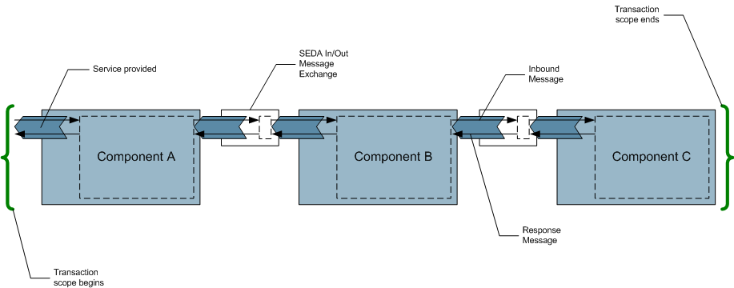

|
|
|
|
|
|
|
Download | Documentation | JavaDocs | Source | Wiki |
OverviewCommunity
DevelopersComponents |
Quality of ServiceServiceMix can handle four parameters that affect the Quality of Service for a given exchange:
These combined parameters defined the QoS for a given exchange, and depending on this QoS, a flow will be selected fo convey this particular exchange. Synchronicity & TransactionalityIf syncSend is used to send a message exchange, the implied semantic is that the transaction flows with the exchange and that the provider has to answer synchronously and enlist any needed resources inside the transaction. By setting the autoEnlistInTransaction flag to true on the container, each time a JBI exchange is sent, it will be enlisted in the current transaction as shown below: If send is used, the act of sending the message will be enlisted in the current transaction, but the exchange processing will be defered and handled in its own thread. To use transactions with asynchronous message exchanges, the JCA flow must be used. As shown below, the scope of a transaction is bounded by the asynchronous message exchange. Note that flows have limited capabilities regarding JBI exchange QoS. Actually, all QoS combinations can be handled by one or the other flow, but exchanges that are clustered, transactional and synchronous or persistent, transactional and synchronous.
Currently, there is no distinction between C (clustered) and R (remote), though this should be enhanced to provider support for SCT which would be handled as ST (using the local endpoint).
Sending synchronous transactional exchangesTransactionManager tm = (TransactionManager) getContext().getTransactionManager(); tm.begin(); InOnly me = createInOnly(); getContext().getDeliveryChannel().sendSync(me); tm.commit(); TransactionManager tm = (TransactionManager) getContext().getTransactionManager();
tm.begin();
InOut me = createInOut();
getContext().getDeliveryChannel().sendSync(me);
// retrieve the out message
me.setStatus(ExchangeStatus.DONE);
getContext().getDeliveryChannel().send(me);
tm.commit();
Sending asynchronous transactional exchangesTransactionManager tm = (TransactionManager) getContext().getTransactionManager(); tm.begin(); InOnly me = createInOnly(); getContext().getDeliveryChannel().send(me); tm.commit(); TransactionManager tm = (TransactionManager) getContext().getTransactionManager(); tm.begin(); InOut me = createInOut(); getContext().getDeliveryChannel().send(me); tm.commit(); Receiving and processing transactional exchangesA great care should be taken to use the same QoS for the answer than the one used for the request. You can check if a given exchange is transactional by using: boolean transactional = exchange.getProperty("javax.jbi.transaction.jta") != null; and you can check if the exchange is synchronous by using: boolean synchronous = exchange.getProperty("javax.jbi.messaging.sendSync") != null; If your component is a MessageExchangeListener, the delivery will automatically be |